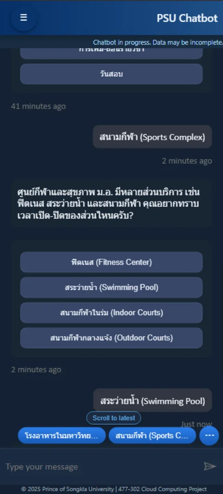
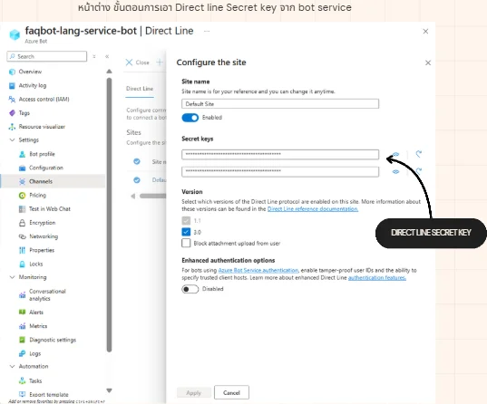

Case study · Course 477-302 Cloud Computing Platform · Oct 2025
A cloud chatbot that
actually went live, not a demo
PSU Chatbot — a bot that answers the questions students ask most, built on Azure Bot Service, wired to Language Studio, then embedded in a page written in plain HTML/CSS/JavaScript through the Direct Line API, with Node.js in the middle exchanging the secret key for a short-lived token. The whole thing ran on an Azure VM around the clock, with HTTPS, for the length of the course — until the student Azure subscription paying for that VM expired and took the URL with it.

for the whole of the course
behind an Nginx reverse proxy
from knowledge base to deploy
light and dark
the system itself was mine
01 — The problem
The same questions, answered by hand every single day
The course asked us to build a cloud application that genuinely works. I chose a chatbot for student questions because it has a clear finish line you can measure — did it answer correctly? — rather than merely showing that I can call a cloud service.
Repeated questions, scattered answers
The answers are spread across announcements, the faculty website and chat groups, so students ask a person instead of looking it up.
A hard budget ceiling
It was a student account, so I had to pick the cheapest service tier that would still stay up all the time — the same account whose credits later ran out and took the deployment with them.
It has to be genuinely reachable
Living only inside Azure's test panel means nobody uses it. It needed its own URL, openable from a phone.
02 — Architecture
How a single message travels
The system has four layers, and the most important one is the Node.js layer in the middle, which exists for exactly one reason — to keep the bot's secret key out of the user's browser.
The user's side
↓ asks for a token
Our server
.env, then exchanges it for a short-lived token to hand to the frontend
↓ connects with the token
Azure services

03 — What I built, step by step
Five steps, from an answer store to a page anyone can open
Build the question-and-answer store in Language Studio
Set up the project, load in the questions students ask most along with their answers, test accuracy in the test panel, then deploy to the Azure cloud.
Create the Azure Bot Service from that model
Create Bot straight from Language Studio, which gives you a bot already wired to the answer store, then test in Azure's Web Chat that it answers correctly.
Open the Direct Line channel
Get the Direct Line secret key from the bot's channel settings, keep it in a server-side .env file, and write the Node.js layer that trades the key for a token.
Design the page myself
No off-the-shelf widget — the UI is written from scratch in plain HTML/CSS/JavaScript, with a light/dark theme switch, a side panel of popular questions, and a hero strip at the top, so it looks like the faculty's own page rather than Microsoft's default.
Put it on an Azure VM with HTTPS
Create the VM (Ubuntu) and set its DNS name · upload the files and run Node.js · put Nginx in front on ports 80/443 as a reverse proxy · get an SSL certificate with Certbot · let pm2 restart the process if it dies.


04 — The most important decision
Why put a server in the middle when the page could call Azure directly?
Direct Line can be connected two ways — with the secret key itself, or by exchanging it for a token first. The first is far less code, but it means the key that unlocks full control of the bot ends up in browser-side code, where anyone who hits view source can read it.
Embed the secret key in the page
Works immediately and needs no server at all — but anyone who opens the page walks away with a key that lets them talk to the bot as us, without limit.
A server that trades the key for a token
The secret lives only in a .env file on the server · the browser only ever gets a short-lived token, scoped to that conversation.
// the secret is read from .env, which is never shipped with the page or committed to git const secret = process.env.DIRECT_LINE_SECRET; // the page calls this endpoint and gets back only a short-lived token app.get('/api/token', async (req, res) => { const r = await fetch( 'https://directline.botframework.com/v3/directline/tokens/generate', { method: 'POST', headers: { Authorization: `Bearer ${secret}` } } ); res.json(await r.json()); // { token, expires_in } });
This was the first time I hit a case where “the easier way” and “the right way” were not the same way, and it is why this project has a server at all when the page is ordinary HTML.

.env05 — Deployment
From my own machine to a URL that opens on a phone
- The machine
- An Azure Virtual Machine running Ubuntu, with an Azure DNS name so it was reachable by name rather than by IP address
- Reverse proxy
- Nginx took requests on ports 80 and 443 and forwarded them to the Node.js process inside, so users never had to type a port number after the URL
- HTTPS
- A certificate from Certbot — genuinely required, not decoration, because modern browsers block cross-domain API calls made from a page still served over HTTP
- Staying up
- pm2 supervised the Node.js process so it restarted itself on a crash and came back on its own after the VM rebooted
- Where it stands now
- The VM was paid for by a student Azure subscription, and it went when the credits did, so the URL no longer resolves. It was up and in use for the whole of the course, which is the part that was hard to get right — the code and the deployment configuration are on GitHub
06 — Problems and lessons
The things no tutorial mentions until you build it
The service sleeps when nobody uses it
Cheap service tiers go idle without traffic, so the first message after a quiet stretch was unusually slow. That is the trade-off you buy with the price, not a bug.
WebChat can only be styled so far
The Bot Framework's ready-made component only goes so far with CSS, so in the end I wrote the whole UI myself and talked to the bot through the API directly, which gave me complete freedom.
Mobile is not a shrunken desktop
A chat box that sits comfortably on a monitor takes over nearly the entire phone screen. Position and size had to be designed for small screens specifically.
What I took away from it
- Designing a cloud architecture — seeing what belongs on the frontend, what belongs on the backend, and what the provider's own service should handle
- Knowing the deployment options — understanding the trade-offs between App Service, Bot Service and managing a VM yourself
- Why UX matters — a bot that answers correctly but is awkward to use gets no users, so the UI work is not an optional extra
- Handling secrets — where a key may live, and where it absolutely may not
What came of it — after the course finished, the faculty's vice-dean, who taught the course, invited me to build the faculty's own chatbot off the back of this project. I had too much on at the time and never followed it up, so the offer went nowhere — but being asked is the part I value more than the grade.
07 — Straight talk
Things worth saying plainly
- It is not running today — it was live for the whole of the course, on an Azure VM with its own HTTPS address, answering questions from a phone. The VM ran on student Azure credits and went offline when they expired with the account, so there is no URL left to hand you. What was built is still on GitHub
- Built in the first term of my third year — the web work here is basic HTML/CSS/JS, nowhere near as involved as the two projects that followed. Its value is in the flow design and in wiring cloud services together until the thing genuinely works
- It was a group of 3 — the system design, the Azure service configuration and the web development were my work
- The answer store was QnA-style — it only answered what it had been trained on; it was not a model that could look things up on its own · if I pick it up again, the step I have in mind is connecting it to university data and using a RAG approach so it can answer from real documents